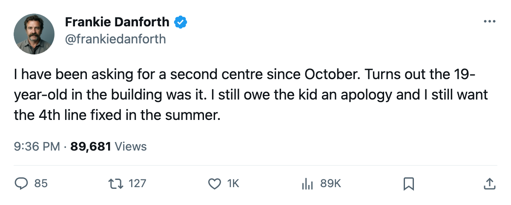
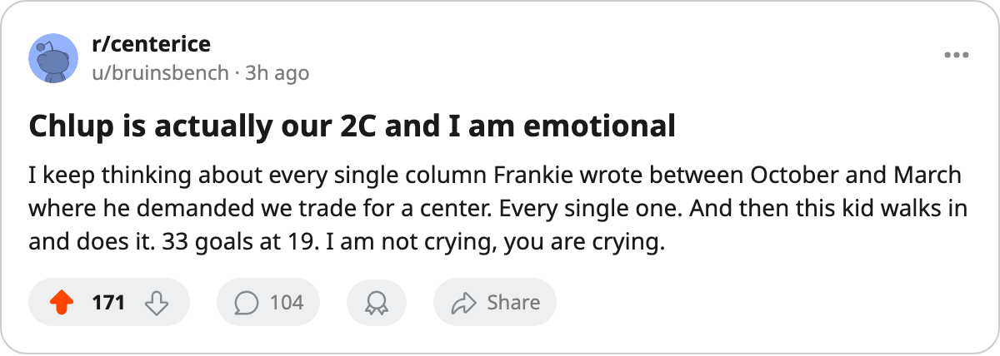

TOR
TOR PIT
PITTHE PANIC METER, PLAYOFF EDITION: Code Yellow, and the kid who plays second centre
I went Orange after 19 shots and I was wrong. The team scored 7 in the next two. And Petr Chlup answered the question this desk has been asking since October.
 Frankie DanforthColumnist · Queen City Telegram
Frankie DanforthColumnist · Queen City Telegram
Code Yellow

I reached for Orange and I was wrong. 19 shots at home, a 3-1 loss on 2005-04-22, and I called it the number that mattered. Toronto scored 3 the next night and 4 on the road on Tuesday to lead this series 2-1. That was one bad period, not a broken team. Code Yellow.
 Marian Gaborik98 has 10 points in 7 playoff games. He is 23 years old, paid $1.10M, one year left. The gap between what he does and what he costs is the reason I stay up too late in April, and it has not moved since I wrote about it on 2005-04-12. It will not move until June.
Marian Gaborik98 has 10 points in 7 playoff games. He is 23 years old, paid $1.10M, one year left. The gap between what he does and what he costs is the reason I stay up too late in April, and it has not moved since I wrote about it on 2005-04-12. It will not move until June.
 Gary Roberts88 is 38 and has 8 points in 7 games, after 82 regular-season games at 20.0 minutes a night. He won the Conn Smythe last spring. He is not slowing down and I am running out of ways to be surprised by it.
Gary Roberts88 is 38 and has 8 points in 7 games, after 82 regular-season games at 20.0 minutes a night. He won the Conn Smythe last spring. He is not slowing down and I am running out of ways to be surprised by it.
The thing I have been wrong about
Petr Chlup86 is playing second centre. Nineteen years old. 71 games, 33 goals, 59 points in his first full season. The Bureau's Book grades him 86 today with a 95 potential. I spent every month of the regular season on the phone asking who plays behind  Mats Sundin91. I wanted a trade at what the calendar has as the deadline. I wanted a trade in February. I wanted one in October.
Mats Sundin91. I wanted a trade at what the calendar has as the deadline. I wanted a trade in February. I wanted one in October.
The answer was in the building.
The GM of  Nashville Predators, Som Richards, said on The Tunnel this week that first place does not require being a buyer: "You have to be a buyer if what you add makes you a better team in June. Not in March. In June." He was right, I was not, and Chlup wearing a second-line jersey right now is the proof. I just did not believe a 19-year-old was it.
Nashville Predators, Som Richards, said on The Tunnel this week that first place does not require being a buyer: "You have to be a buyer if what you add makes you a better team in June. Not in March. In June." He was right, I was not, and Chlup wearing a second-line jersey right now is the proof. I just did not believe a 19-year-old was it.
The thin part
The 4th and 5th lines are where I put my hand on the pulse next.  Darcy Tucker80 has played 3 games for 1 point. Konstantin Koltsov73 played 38 for 19 points in the regular season.
Darcy Tucker80 has played 3 games for 1 point. Konstantin Koltsov73 played 38 for 19 points in the regular season.  Ramzi Abid81 has 20 goals and 46 assists but skates 13.8 minutes a night on the 2nd penalty-kill unit. Behind Chlup, the forward depth drops to men who play spot minutes and carry 80-overall ceilings.
Ramzi Abid81 has 20 goals and 46 assists but skates 13.8 minutes a night on the 2nd penalty-kill unit. Behind Chlup, the forward depth drops to men who play spot minutes and carry 80-overall ceilings.
That is a problem for June. Tonight it is not.  Roberto Luongo94 is 5-2 with a 1.73 GAA and a .953 save percentage. The kid plays 2C. The 38-year-old has 8 points in 7 games. We lead a series 2-1 on the road.
Roberto Luongo94 is 5-2 with a 1.73 GAA and a .953 save percentage. The kid plays 2C. The 38-year-old has 8 points in 7 games. We lead a series 2-1 on the road.
I said the second centre was a problem in October. It was. It is not anymore. And I am going to enjoy being wrong about the kid more than I will enjoy admitting it.

